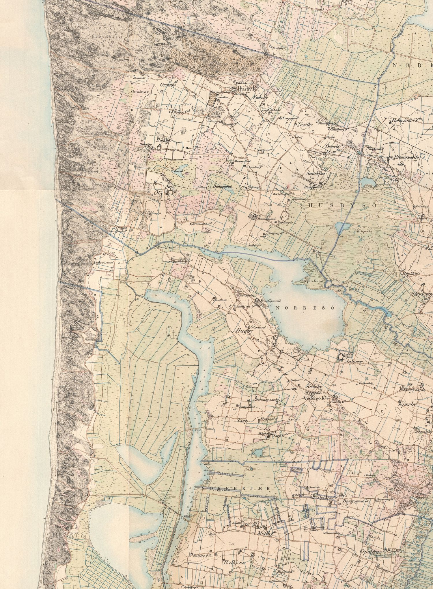
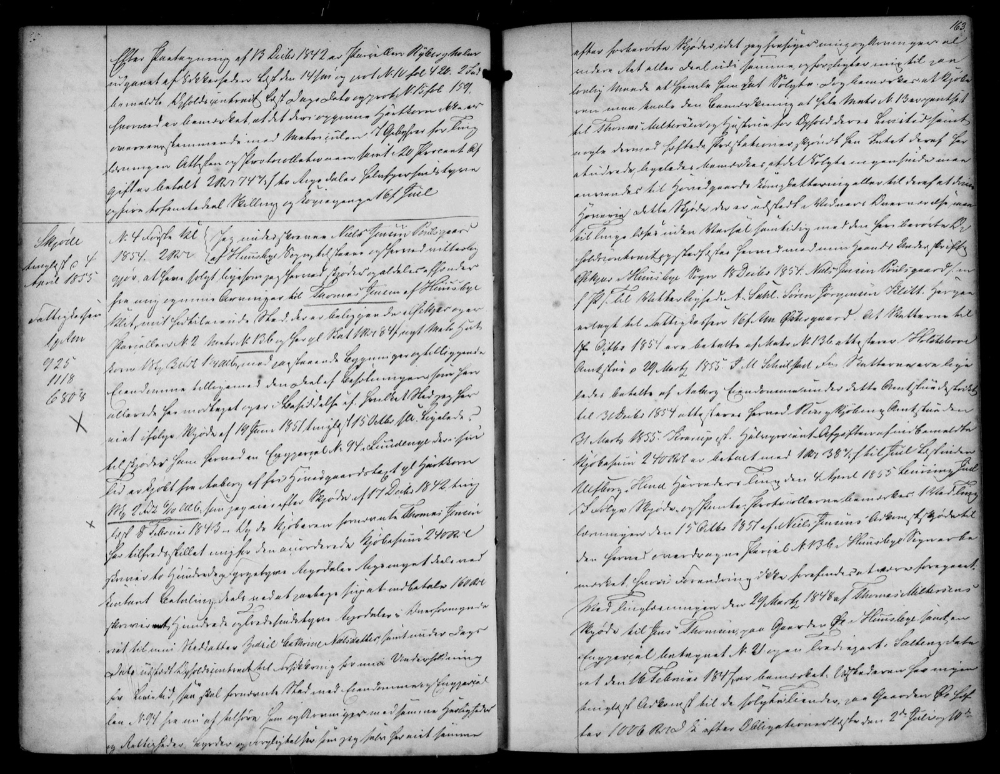
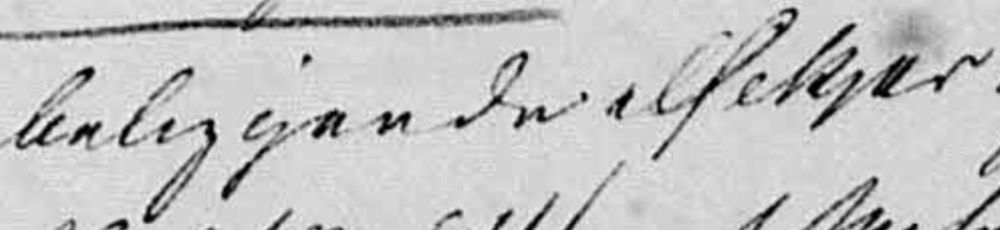

Kæret
Silkjær var et sted, længe før det blev et slægtsnavn. Navnet står som selvstændig lokalitet i Husby Sogn i Danmarks Stednavne — en mark, et kær, en ejendom. Hvor gammelt det er, ved vi ikke. Men det var stedets navn og ikke slægtens, dengang de første, vi kan følge, blev født ude på Sønder Klit i 1700-tallet.
I dag ligger stedet på Øhusevej 1B i Vester Husby — matrikel 13b, udskilt fra gården i Øe. Kilderne kalder det to ting: kirkebøgerne skriver Økjær, folketællingerne Øe. Det er ikke to adresser. Øe var ejerlavet, den store betegnelse; Økjær var sognets navn for denne del af det — kæret og husene omkring det. En familie kunne altså sidde på 13b og alligevel få Økjær skrevet i kirkebogen.Folketællingerne 1890, 1901 og 1911 fører husstanden direkte på matr. 13b, og realregistret følger adkomsten fra skødet i 1854/55 til salget ud af slægten i 1924. At Økjær dækkede flere husstande, ses hos Thomas Jensens bror Esper: hans børn fødes i »Øe«, aviserne kalder ham Ø., og ved hans død i 1883 fører kirkebogen ham som husmand »i Økjær« — samme husstand, tre betegnelser. Ejendommen, der i dag bærer navnet Økjær, ligger på matrikel 15 og er en anden ejendom end slægtens. Ejerrækken står i appendiks A. [S60, S61, S65, S66]
Den stærkeste lokale parallel peger mod »pilekæret«: gården Silbjerg i samme sogn — den ligger nærmere Husby Sø, et stykke vest for Silkjær — blev allerede i 1900 forklaret ud fra silja, et ældre navn for pil — skråningen »har i gammel Tid været bevokset med Pil«. Om de to navne faktisk deler forled, kan først afgøres, hvis en ældre form af Silkjær findes. »Kæret ved det stille vand« er en anden mulig læsning. Begge er tolkninger, ikke fakta.Forleddet er ikke fastslået i navneforskningen. Pil-tolkningen bygger på P. Storgaard Pedersens forklaring af Silbjerg (1900) og ordbøgernes silje/silja; alternativet på ODS' opslag sil. Den ældste fundne kildeform — »Silkjær« i skødet fra 1854/55 — ligner den nutidige og afgør ikke forleddet; det kunne en endnu ældre form som Siljekær. [S4, S22—S24, S59, S63] Alle forbehold →
Ét er derimod sikkert: navnet er vokset op af jorden — hvad enten forleddet er pil eller stille vand, hører begge læsninger til i den samme våde eng.



Papirerne lader os se ejendommen træde frem. I Øe lå den gård på matrikel 13, som Thomas Miltersen hidtil havde ejet og beboet. I 1847 overdrog han gården til sønnen Jens Thomsen. I 1851 lod sønnen et stykke af jorden udstykke: parcel nr. 2, matrikel 13b, ud mod det lave kær. Samme sommer solgte han parcellen til Niels Jensen Poulsgaard, der selv var født i Øe og netop var blevet enkemand. [S40, S61, S62, S63]
Niels Jensen beholdt den kun få år. Ved et skøde underskrevet 18. december 1854 og tinglyst 4. april 1855 solgte han videre til en ung husmand og fisker, Thomas Jensen af Husby. Det, der skiftede hænder, beskriver skødet i én vending: »et fritliggende Huus, der er beliggende i Silkjær«. Skøderne peger på, at huset kan være kommet til i hans korte ejertid — skødet fra 1851 nævner ingen bygninger, mens det fra 1854 udtrykkeligt omtaler et hus — men bevise det kan de ikke. Sælgeren blev boende i huset som aftægtsmand, forsørget af den nye husfader. [S60, S63]
De tre ord er navnets ældste daterede belæg — og dets mest jordnære. Silkjær står her ikke efter nogen persons navn: det betegner stedet, hvor huset lå, og køberen hedder blot Thomas Jensen. Han købte altså ikke et hus, der siden fik navn efter slægten. Han købte et hus, der kan have været ganske nyt, på et sted, der allerede hed Silkjær. Familien kom til stedet først; navnet kom til familien bagefter.
Sådan kunne stednavne blive til personnavne på egnen. De fortalte, hvor et menneske hørte hjemme. Og fordi der i et lille sogn boede alt for mange, der hed Niels, Jens og Thomas, blev stedet også en måde at kende folk fra hinanden på.
Læs mere om landskabet og kilderne
Danmarks Stednavne registrerer Silkjær som selvstændig lokalitet i Husby Sogn, Ulfborg Herred. Den ældste daterede optegnelse, der er fundet, er skødet fra 1854/55 [S63]. Efterleddet kær er almindeligt over hele det vestjyske lavland og betegner konsekvent våd, lavtliggende jord.
Forleddet har en nær parallel i gårdnavnet Silbjerg i samme sogn — Storgaard Pedersen stedfæster gården sydøst for præstegården, og det lokalhistoriske arkiv beskriver den som liggende nærmere Husby Sø, et stykke vest for Silkjær. Silbjerg og Silkjær er to forskellige gårde og må ikke forveksles. [S114] P. Storgaard Pedersen skrev i 1900, at Silbjerg »bar formodentlig Navn af, at Skraaningen i gammel Tid har været bevokset med Pil, hvis ældre Navn var Silja« — og selje/silje, i nordisk form silja, er i ordbøgerne et ældre navn for pilearter, kendt også i dansk og jysk sprogbrug. Deler de to navne førsteled, er Silkjær kæret med siljer: pilekæret. Trap Danmark kender desuden et andet Silbjerg i Staby Sogn, i 1688 skrevet »Silbiers Bol« — de to gårde må holdes adskilt i kilderne. Den ældste fundne stavemåde — »Silkjær« i skødet fra 1854/55 — ligner den nutidige og afgør ikke spørgsmålet; afgørende ville være en endnu ældre form som Siljekær eller Siliekier, og en sådan er ikke fundet.
Kilder: Danmarks Stednavne, »Silkjær — Husby s., Ulfborg h.« [S4] · Ulfborg-Vemb Lokalhistoriske Arkiv, H318, Wos i æ hawbjerre [S3] · ODS, opslagene sil og Selje- [S22—S24] · P. Storgaard Pedersen, Ulfborg Herred, 1900 [S59] · Ulfborg-Vemb Lokalhistoriske Arkiv, korrespondance 2026 [S114].